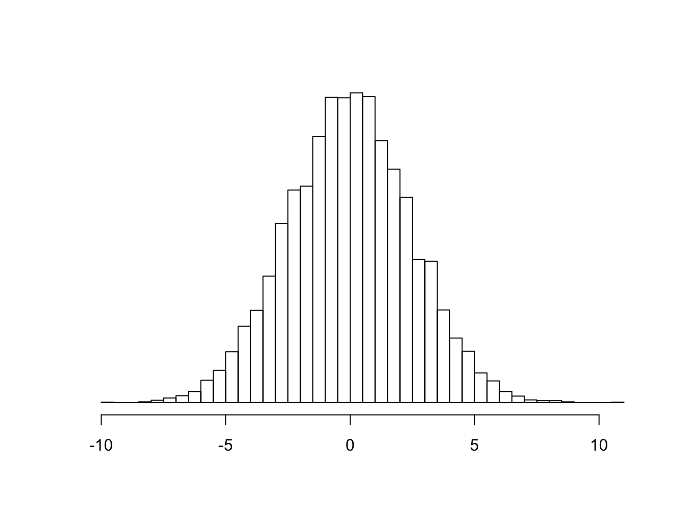
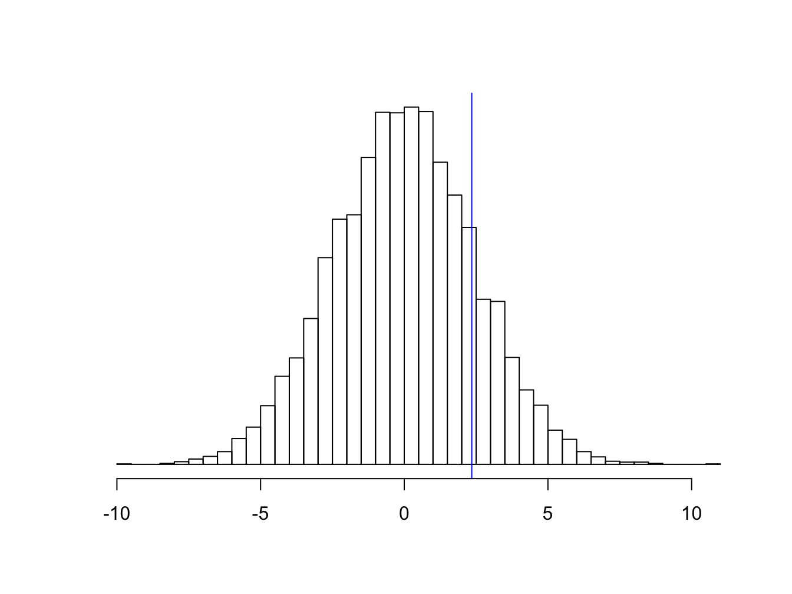

Chương 5 Kiểm định giả thuyết thống kê
5.1 Nguyên tắc kiểm định thống kê
Giả sử ta muốn tìm hiểu mối liên quan giữa độ cô đặc máu (hemoconcentration) và sốc sốt xuất huyết ở đối tượng trẻ em từ 5-15 tuổi nhập viện vì sốt xuất huyết. Nghiên cứu được tiến hành bằng cách chọn 500 bệnh nhân là trẻ em trong lứa tuổi từ 5-15 nhập viện với chẩn đoán sốt xuất huyết và ghi nhận lại độ cô đặc máu. Sau khi theo dõi, số bệnh nhân trong mẫu nghiên cứu được chia thành 2 nhóm là có sốc và không sốc.
Trong một nghiên cứu ở bệnh viện A, độ cô đặc máu trung bình của nhóm sốc là 4.93 và của nhóm không sốc là 2.57. Trong một nghiên cứu khác, nhóm nghiên cứu thuộc bệnh viện B lại ghi nhận độ cô đặc máu trung bình của nhóm sốc là 4.22 và của nhóm không sốc là 1.07. Kết quả các nhóm nghiên cứu ở nhiều địa điểm khác nhau được tổng hợp trong bảng sau:
| bv | mau | soc | kosoc | hieuso |
|---|---|---|---|---|
| A | 500 | 4.93 | 2.57 | 2.36 |
| B | 500 | 4.22 | 1.07 | 3.15 |
| C | 500 | 0.56 | 3.08 | -2.52 |
| D | 500 | 1.14 | 3.67 | -2.53 |
| E | 500 | 2.47 | 4.18 | -1.71 |
| F | 500 | 5.04 | 3.39 | 1.65 |
Nếu không có sự khác biệt về độ cô đặc máu trung bình giữa hai nhóm sốc và không sốc, thì chúng ta có thể kỳ vọng rằng hiệu số giữa giá trị độ cô đặc máu trung bình giữa hai nhóm sẽ bằng 0. Tuy nhiên trên thực tế, do tác động của một số yếu tố khách quan và chủ quan mà nhà nghiên cứu khó có thể kiểm soát được hết, hay còn gọi là các sai số ngẫu nhiên, hiệu số này có thể lớn hơn hoặc nhỏ hơn 0 một chút, nhưng vẫn dao động xung quanh giá trị 0.

Xét kết quả nghiên cứu ở bệnh viện A, hiệu số giữa độ cô đặc máu trung bình giữa hai nhóm là 2.35.

Các bước tiến hành kiểm định thống kê:
Phát biểu giả thuyết vô hiệu (null hypothesis): không có sự khác biệt giữa hai nhóm.
Tại sao lại cần phải phát biểu giả thuyết là hai nhóm không có sự khác biệt mà không phải là hai nhóm có khác biệt? Vì chỉ khi phát biểu hai nhóm không có khác biệt, mới có thể biểu diễn phát biểu này dưới dạng biểu thức:
Trung bình (nhóm A) = Trung bình (nhóm B)
hay:
Trung bình (nhóm A) - Trung bình (nhóm B) = 0
Nếu ta chọn phát biểu ban đầu là giữa hai nhóm có sự khác biệt, thì sự khác biệt là bao nhiêu mới đủ lớn? Dựa vào đâu để chọn con số đó? Vì vậy giả thuyết vô hiệu là sự lựa chọn phù hợp cho các tình huống cần so sánh.
Nếu null hypothesis là đúng:
- Xác định test statistic
- Xác định phân phối của test statistic
- Tính test statistic trong mẫu
- Tính xác suất kết quả xa hơn test statistic trong mẫu (p)
Kết luận
- p càng nhỏ: null hypothesis càng không phù hợp
- p càng lớn: null hypothesis càng phù hợp
5.2 Tổng quan về các kiểm định thống kê thường gặp
Phép kiểm t
Null hypothesis: Trung bình (nhóm A) = Trung bình (nhóm B)
Phép kiểm Chi bình phương
Null hypothesis: Tỷ lệ biến cố (nhóm A) = Tỷ lệ biến cố (nhóm B)
Phép kiểm Mann-Whitney (Wilcoxon rank sum)
Null hypothesis: Phân phối (nhóm A) = Phân phối (nhóm B)
Các phép kiểm cho phân phối bình thường
Phép kiểm Shapiro-Wilk
Null hypothesis: X theo phân phối bình thường (dưới góc độ AOV)
Phép kiểm Kolmogorov-Smirnov
Null hypothesis: X theo phân phối bình thường (dưới góc độ ECF)
5.3 Trị số p: ý nghĩa và giá trị
Nếu null hypothesis là đúng (không có khác biệt giữa hai nhóm), xác suất để quan sát được kết quả như đang có hoặc xa hơn là p.
5.4 Mối quan hệ giữa trị số p và khoảng tin cậy
Nếu lặp lại thiết kế nghiên cứu 100 lần, thì có 95 lần kết quả nghiên cứu sẽ nằm trong khoảng tin cậy 95%.
95% khả năng là khoảng giá trị (-2.42, 7.13) có chứa giá trị khác biệt về hemoconcentration thực sự trong dân số